第一章 岗位工作概述
欢迎加入运营团队!
本岗位主要负责:
订单处理
系统配置
任务待办
异常解决
全链路履约
工作目标:
保证订单正常流转、采购正常进行、订单顺利发货、客户及时收货的全链路履约。
1. 系统介绍
1.1 点石系统
主要用途:
商品配对
商品价格配置
客户收款配置
订单处理
简单理解:
点石负责管理客户商品&订单价格
1.2 马帮系统
主要用途:
商品采集
订单管理
发货管理
物流管理
供应商管理
成本维护
简单理解:
ERP负责管理商品库存&订单履约。
2. 订单处理流程
2.1 审批流介绍


Tips:如客户审批内信息有变化需及时同步BD提交资料变更审批进行更改完善付款方式介绍
正常付款:客户下单后现款实付,资金到账才可进行订单处理
预存款抵扣:客户预先充值货款,下单直接从预存余额扣钱,余额充足无需走待审核,直接可以标记进行订单处理
账期:先拿货后结算,无需当下付款提前标记处理订单。BD预先发起“账期申请”审批,按账期额度提前为客户处理订单,需监控账期额度剩余。
2.2 审批流使用📌
背景:结算组发起审批——运营确认账单
流程:
1.审批到达后,确认审批客户付款方式
在payment表&点石批次试图搜索审批客户邮箱/批次号
预存款客户:核查订单明细附件payment表本批次订单数&订单金额&本次抵扣后余额是否正确,如若余额≥0,进行订单处理标记;如若金额<0且可覆盖一部分订单,仅处理标记可覆盖批次订单;如若金额<0且完全不够标记本批次订单,则不进行任何处理
正常付款:确认本批次应收金额&订单明细附件标准正确即可通过审批
账期:按照审批客户账期处理方式,对本批次订单进行处理
1标记订单卡待审核
2标记订单打标暂不发货
3标记订单不做额外处理直接发货
背景:结算组发起审批——运营处理
流程:
审批到达后,在payment表&点石批次试图搜索审批客户邮箱/批次号
核查转账凭证金额&币种&日期&收款主体和BD填写客户实付金额是否一致
核对本批次应收金额和客户实付金额是否一致,对应填写正确/多收/少收
如有payment表需要进行充值填写
进行订单处理
提交企微审批
TIps:如有超过汇率差的多收情况需要进行记录📝;如少收只可处理支付金额可覆盖部分订单
第三章 ERP(马帮)操作
1. 商品采集刊登
前期准备:找到各个组的配价表
链接采集与基础信息编辑
产品中文名称:格式为「材质+用途」,要求简洁,材质优先填写平价表述(如涤纶、亚麻、塑料、玻璃,避免纯棉、羊毛、陶瓷等)。
销售员:对应提供工单/商品信息的销售,为必填项。
多属性信息(变体)编辑【核心步骤】
筛选变体
生成中文标题:点击「中文标题一键生成」,确保中文标题无英文、不冗长。
修改变体颜色为英文:保证SKU列无中文。
生成并编辑SKU编号:点击「一键生成SKU编号」
生成英文标题:点击「英文标题一键生成」,完成后检查核对。
核对成本价:与销售提供的准成本价一致,无偏差。
核对重量:与工单/销售提供数值一致(克为单位)。
清理产品描述:将产品描述列内容全部删除。
仓库、采购与申报信息填写
选择仓库:销售三组仓
申报信息:
点击「一键引用标题」
查询并选择报关编码:仅选蓝色有效编码 ,灰色标注「失效」的不选,优先选结尾 0 多的编码(如3个0);
填写申报价格:根据实际采购成本对标申报美金。
低于 20:$1
20~40:$2
40~60:$3
60~100:$5
100 及以上:$8
特殊标记:按物流渠道勾选(不是商品属性),带电池/液体/化妆品等对应标签,无特殊属性则不填。
所有特货类型,不冲带电渠道就勾液体
同步库存 SKU 与认领
点击「批量同步到库存 SKU」,必须勾选「正常销售」(否则库存 SKU 中无法搜索)
认领商品:选择对应平台,认领到对应客户马帮店铺。
最终刊登编辑
图片: 保留无中文的图片 ,≤6张,删除多余图片(操作:勾选需要图片→删除未选中)
SKU信息:将所有产品的包裹重量批量改为10克( 固定包装重量)——销冠组为20g
📍重点检查
采集商品是否和客户所需商品一致;采集商品图片是否维护正确——否则可能导致:1采购错误2入库异常3客户投诉
商品属性是否正确打标(普货无需打标/带电池/液体化妆品)——否则可能导致:物流配置错误
包裹重量是否统一填写10克——否则可能导致:后续点石系统配价调价造成影响【销冠组统一填20g】
商品重量 填写单位:g(克)&整数,否则可能导致:系统可能无法正常处理
新品采集刊登后需要同步物流组渠道
🐋异常处理
刊登到点石后,如何修改商品信息——点石-仓库商品管理-修改价格/重量
对于特货/敏感商品——这种敏感性的,完全以另一种东西来写,比如说,袋装压缩毛巾啥的。如果走华翰、领讯这些物流渠道,可以写除臭丸这种,但是普通物流,就不行。下图是华翰采集的示例
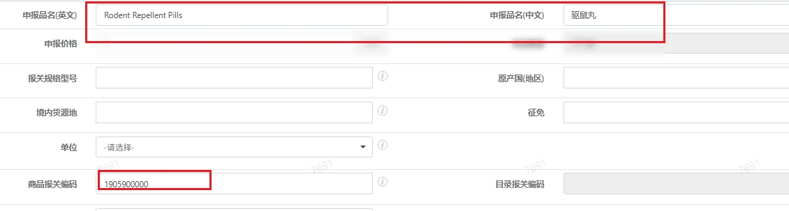
2. 更换供应商(换供)
什么情况下换供:原供应商缺货、发货太慢、故意不发货、价格上涨、优化供应商
操作步骤
找到新的供应商产品链接:(招商二次寻源/优化商品)
批量处理方法:库存sku——批处理——批量添加供货产品链接
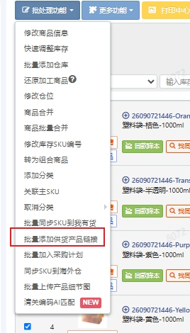
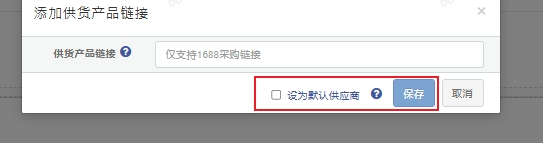
- 单个处理:库存sku——批量添加供货产品链接——选择特定的款式/尺码——设为默认供应商

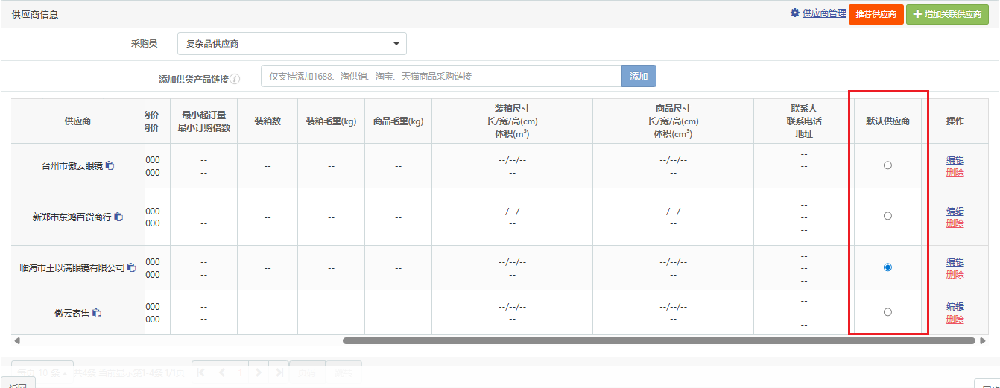
3. 手动创建/模板导入库存SKU
适用场景
无1688链接,无法通过采集刊登创建的商品,支持单个手动创建和批量模板导入。
有1688链接,但是变体不全,商家可以做但是链接里没有
操作入口:库存SKU
方式1:单个手动创建
搜索结果_HS编码网(商品报关编码网站)
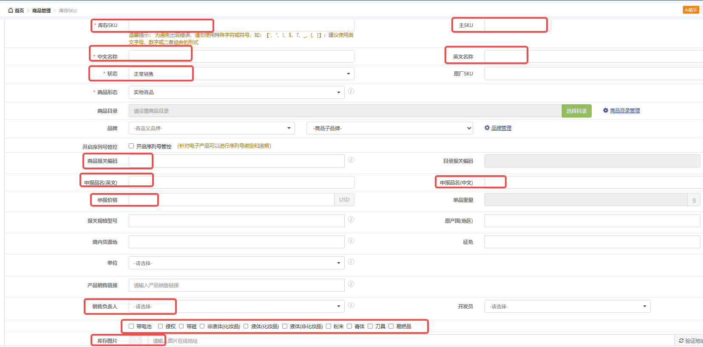
- 点击「手动创建库存SKU」,填写带*的必填项,核心信息要求:
SKU编号:保证唯一性,建议以「当日日期+时间」命名(如2606061745)。
库存中文名称:遵循「材质+用途」,简洁无英文。
SKU状态:选择「正常销售」。
变体区分:有变体时以「-」分隔(如black-s、black-M),每个变体SKU编号唯一。
其他必填:成本价、申报信息、仓库、商品重量(克为单位)、产品图片。
上传产品图片:可直接上传图片文件,或粘贴jpg格式的图片在线地址(验证地址有效后保存)。
点击保存,完成单个库存SKU创建。
方式2:批量模板导入
点击「模板导入库存SKU」,下载官方库存SKU模板。
按模板要求填写信息,遵循上述「手动创建」的信息规范,确保SKU编号唯一、必填项无遗漏。
线下表格可提前上传图片(或填写图片在线地址),完成后在系统中选择编辑好的表格上传。
上传成功后,可在库存SKU页面补充编辑图片、信息,最后保存修改。
4. 组合SKU编写流程
适用场景:客户固定2pc、3pc出单
前置条件:组合内的所有单品均已完成库存SKU创建,且能在商品库存SKU中搜索到
操作入口:马帮-组合sku-手动创建组合sku
- 填写基础信息:
组合中文名称:按实际填写(如首饰套装-项链+耳环、包包套装黑色+棕色)。
组合SKU编号:保证唯一性,命名规则同库存SKU。
图片:上传jpg格式图片,无中文。
- 添加组合内库存SKU:
从商品库存SKU中复制需要的单品SKU,粘贴至组合SKU编辑页。
填写每个单品的数量,可按需修改,点击「添加」确认。
填写申报信息:与单品申报信息填写规则一致,并填写报关编码。
点击确定,系统将自动计算组合SKU总重量(所有单品重量总和),完成组合SKU创建。
5. 手工单/样品单创建📌
什么是手工单?:系统没有自动生成,需要人工创建的订单
一、创建流程——手动创建优化为使用小程序生成-->手工单生成器 v2(异常at秦畅)
进入「订单」页面,点击「新增订单」。
填写订单号:如无指定订单号,按「销售姓名+当天日期+时间」生成(如josie2606061813)。
填写交易号:如无指定交易号,复制订单号即可。
选择付款时间:选择当前时间即可。
填写收货地址:将BD提供的地址信息拆分,按下图所示规范填写至对应字段。
选择商品:选择所需商品SKU,并填写对应数量。
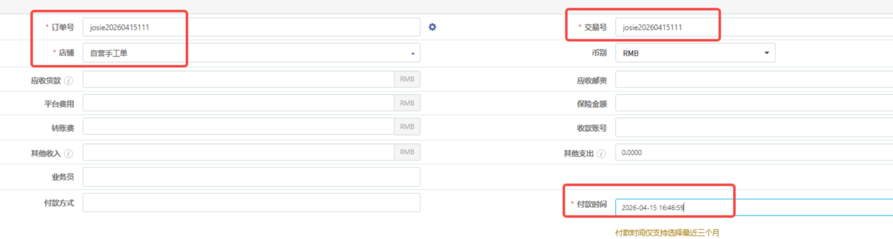

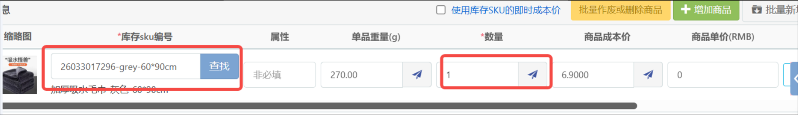
二、建单后的处理流程(新客户)
- 设置发货限制:建单成功后
必做:标记打包视频
客户未付款:订单卡入「待审核」状态-待确认款项
客户已付款:打标「暂不发货」,等待风控确认到账。
手工单金额为0,或预存款客户有余额时,无需卡单。
- 同步订单信息:将订单号反馈至任务评论区,并填写手工单表,同步数据组。

配置物流:给物流创建任务,安排物流渠道,获取物流号后反馈至任务评论区。
付款后放行:客户付款后,将订单从「待审核」中挑出,或取消「暂不发货」标记。
三、手工单任务跟进规范
手工单仍须完成「建单、打标、同步填表」等标准动作。样品单手工单任务须保留至妥投后才能关闭,每日检查任务时,须同步以下节点的最新状态:
同步单号及打标截图:在任务描述中同步三个信息手工单单号、货运单号及物流渠道,并将马帮中「打包视频」标记的截图上传至任务评论区。
跟进国内段运输:追踪商品国内段在途状态,到仓后催促加急入库、上架。
跟进仓库打包视频:向仓库催要打包视频,将打包视频原件及仓库返回的打包视频上传至任务评论区和附件。
跟进国际段履约:仓库发货后,每日检查并更新国际段物流轨迹,直至妥投。
妥投后同步销售:样品单妥投后,通知销售商品已送达,以便跟进客户满意度及反馈。
6. 检查马帮未配对订单处理
- 待处理筛选订单商品状态自动创建
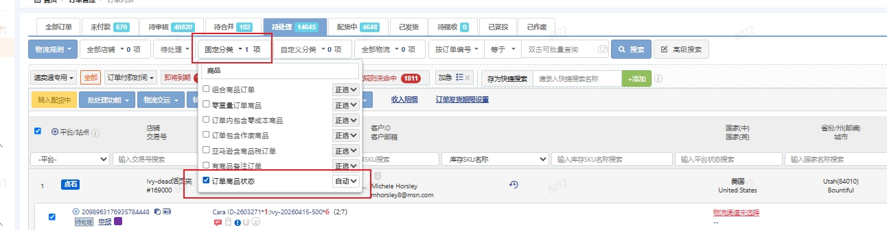
- 导出订单,可以使用有留言模板(主要是为了看店铺)
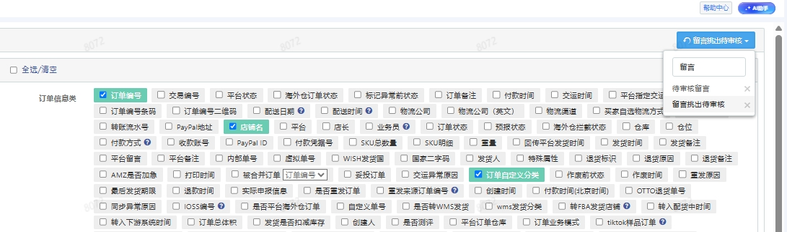
- 筛选对应店铺,马帮配对,找到未配对产品
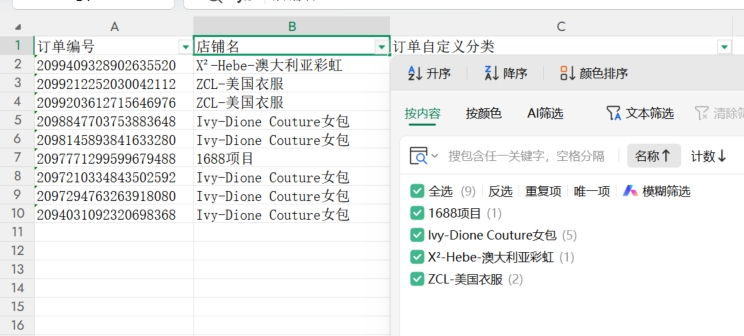
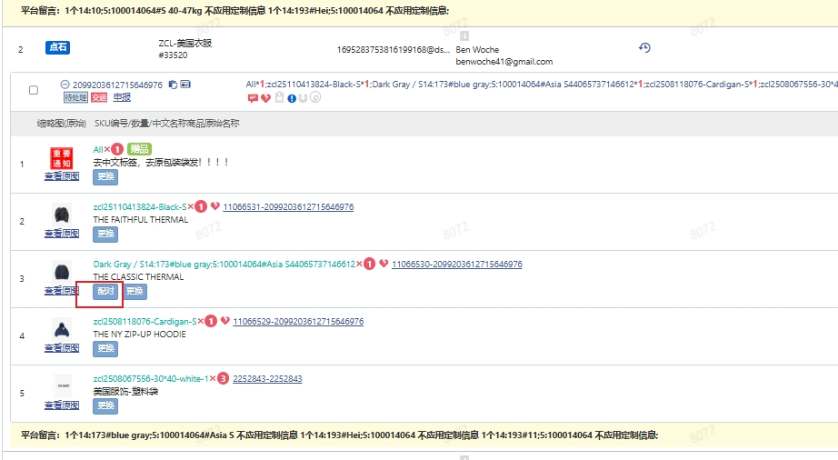
- 如何找到需要配对的sku(霍格沃兹)——3种方法
- 用商品名称在之前出过的订单里找sku(如果搜不到,可以把点石时间范围拉长),进行最终确认(图片、颜色、尺码),点击配对,粘贴上有配对的sku
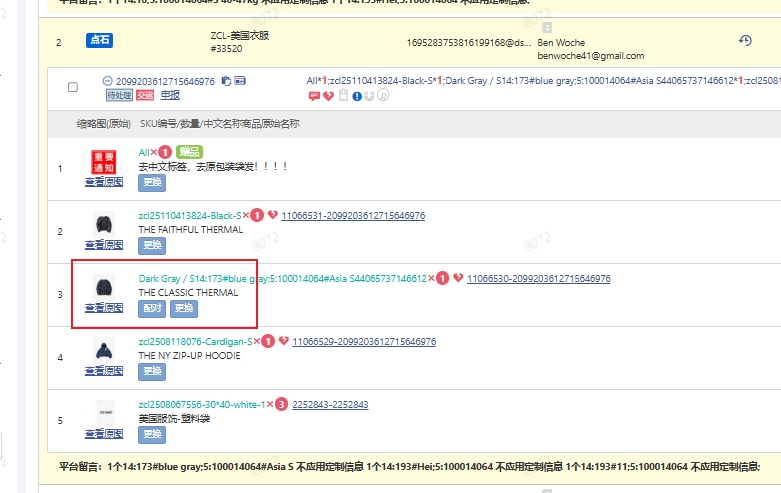
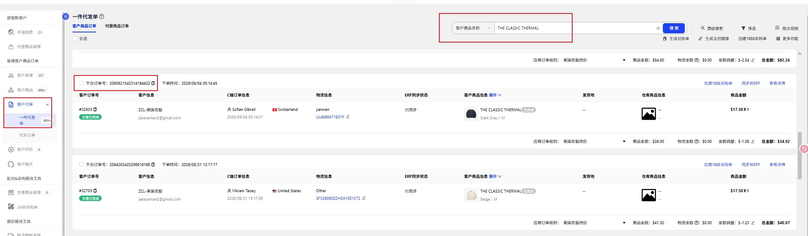
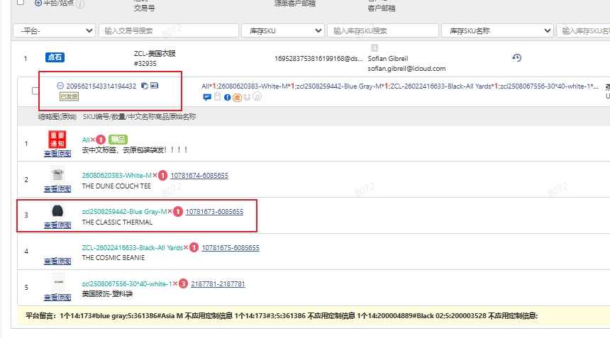
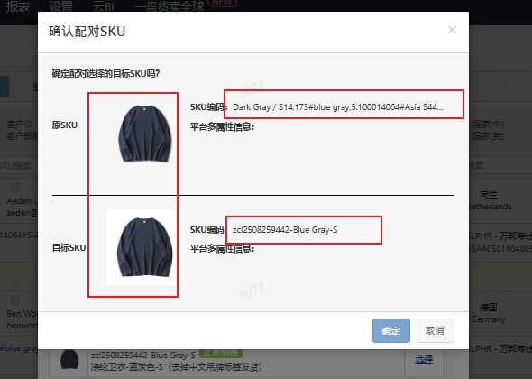
- 用商品名称在配价表里搜索
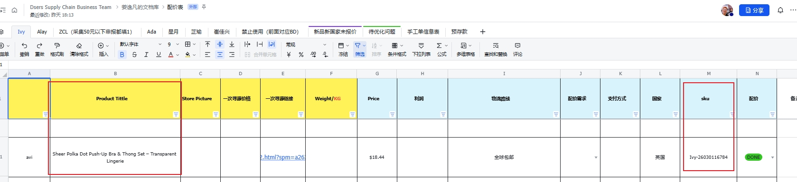
- 以上两种方法都找不到,那就是没有,祭出绝招:给BD建任务,让他们去寻源
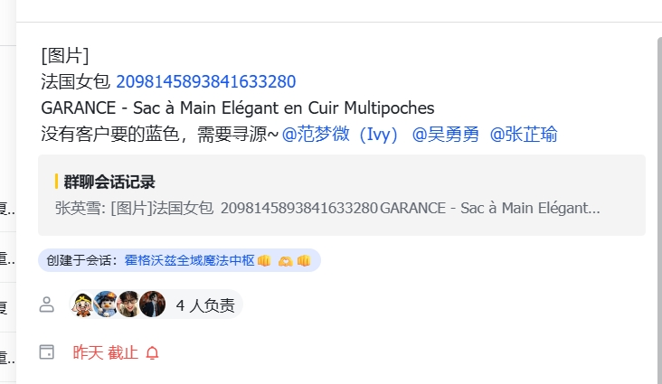
- 对配对订单进行重新交运
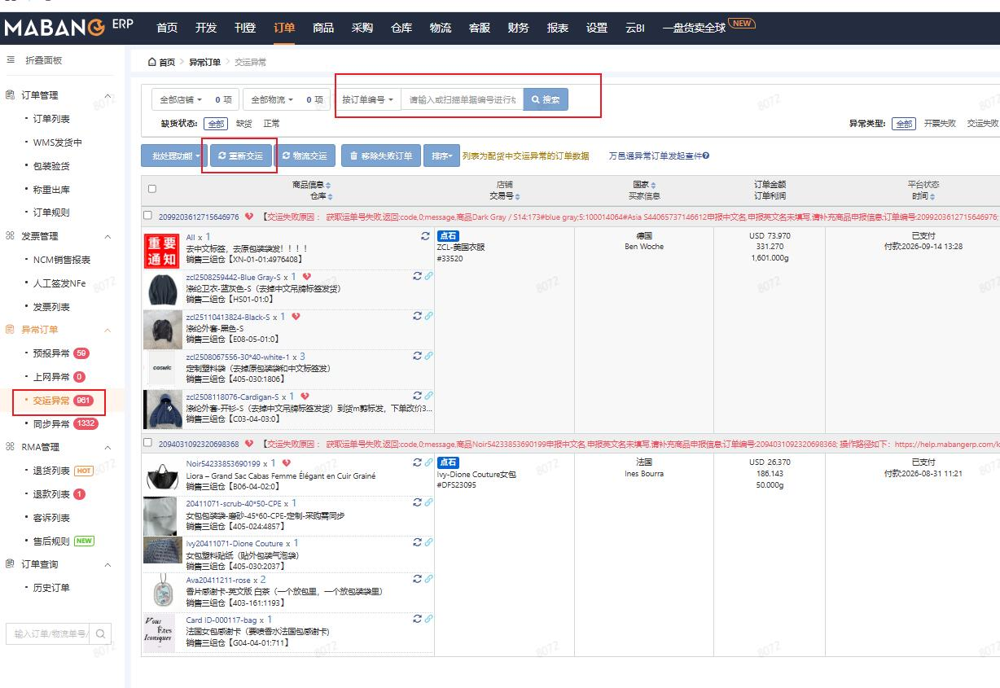
- 待审核订单中未配对的商品步骤相同
7. 马帮打标
操作步骤:
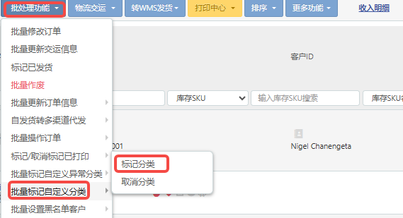
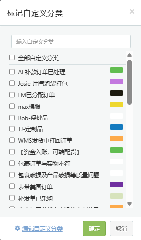
8. 卡进/挑出待审核
卡待审核: 挑出待审核
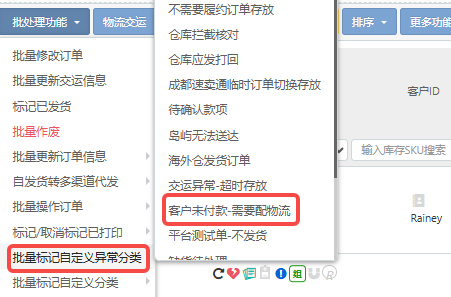

9. 马帮规则设置&赠品设置 马帮培训
入口:订单-订单规则——注意第一步一定是停用规则
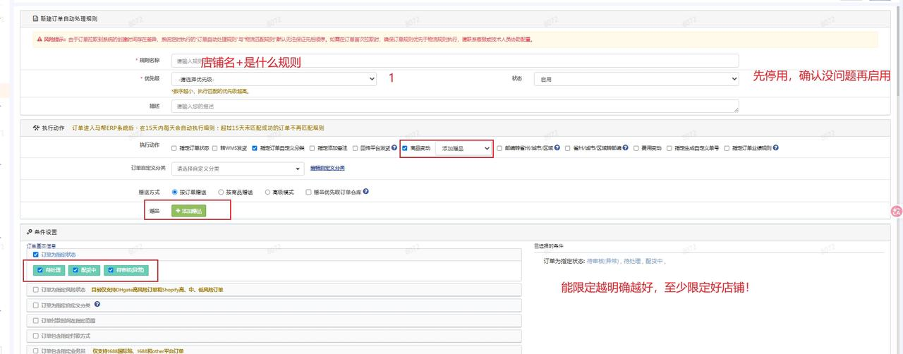
10. 马帮作废订单
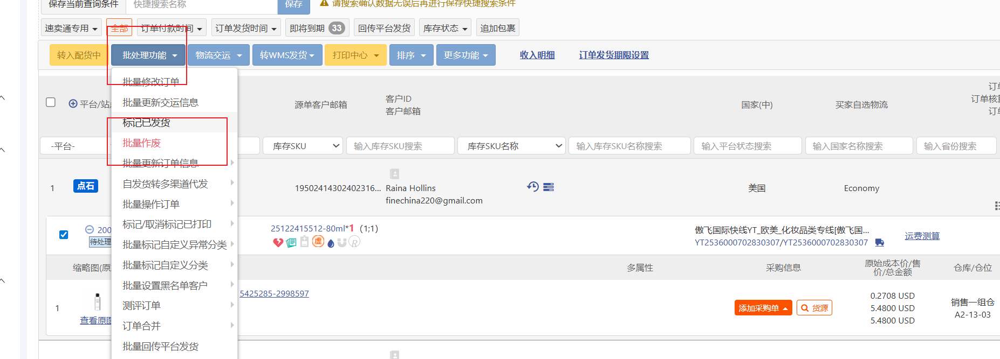

作废备注:崔佳兴-马里奥小潘-BD要求 / 李淑宇-除毛手套-唐人取消退款
11. 马帮加急订单
马帮——待处理:按照如下条件筛选订单
订单状态:选择「待处理」。
自定义分类:选择「多选取交集」,以下分类均勾选「反选」:
TJ-定制品。
海外仓发货。
仓库加工普货客户没给定制信息。
暂不发货。
- 固定分类:
交运状态:正选「有货运单号」。
缺货订单:反选。
筛选后,同步订单号给物流组并建加急任务。16点之前的订单直接加急,16点之后的订单走审批加急
这是所有组加急订单的筛选方式,本组的需要选上自己组的马帮店铺
12. 马帮删除/增加/更换sku
页面:修改发货仓库或商品 删除sku、增加sku、更换sku
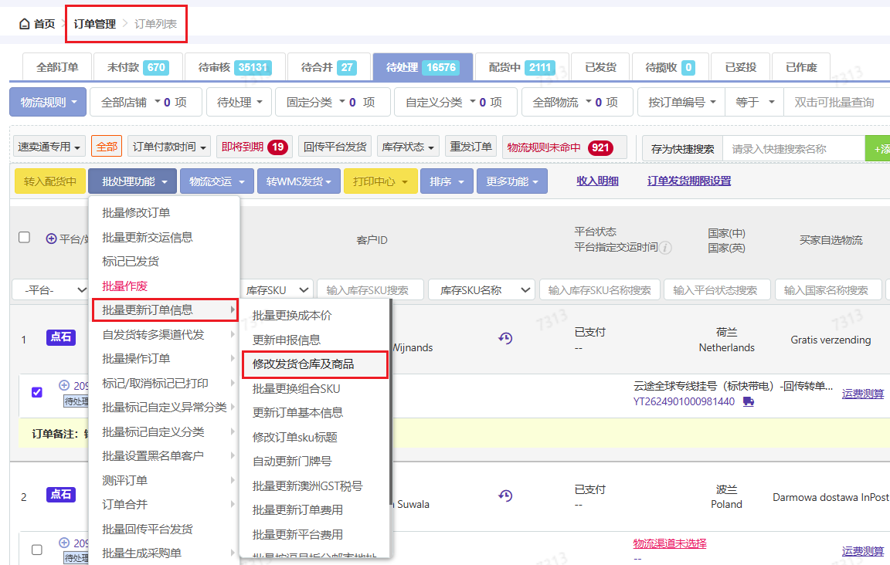
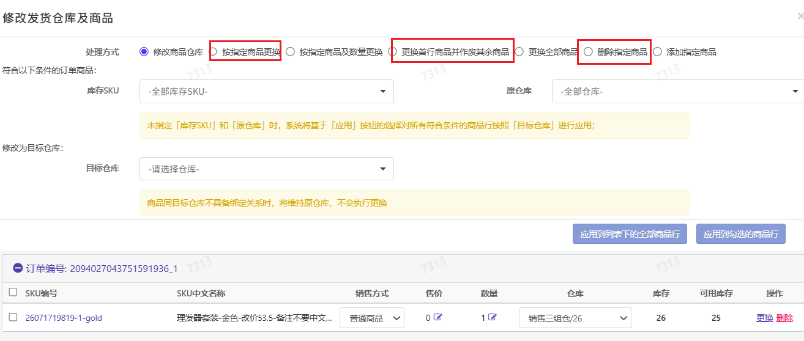
13. 合并/拆分订单
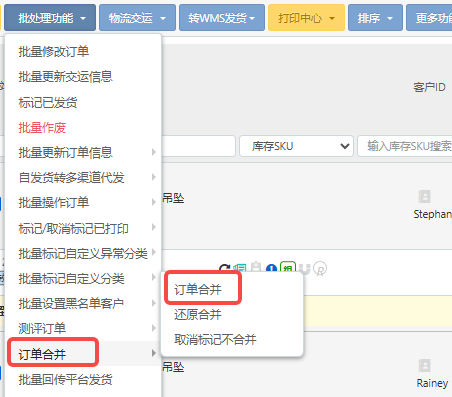
14. 检查/挑出卡进有留言分类的待审核订单
有留言挑出待审核
- 马帮待审核其他异常导出订单
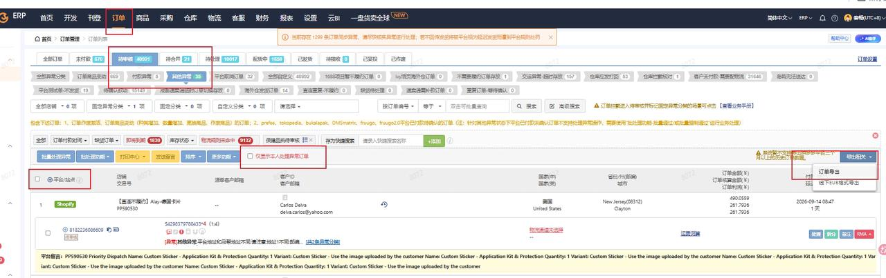
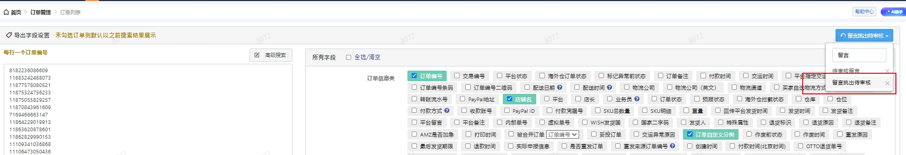
- 自定义分类搜索有留言找到对应店铺(霍格沃兹所有都需要)
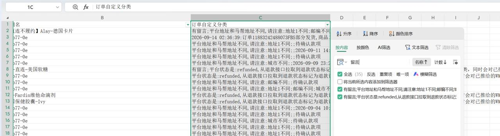
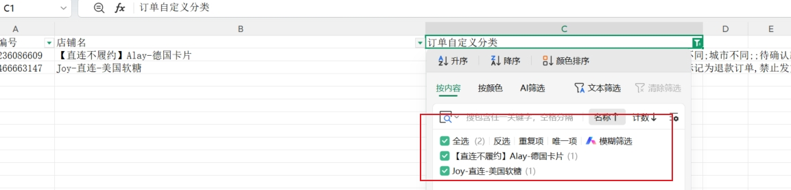
- 搜索订单批量处理异常(注意只在其他异常分类里挑出,千万不能误挑出待付款确认款项的!)
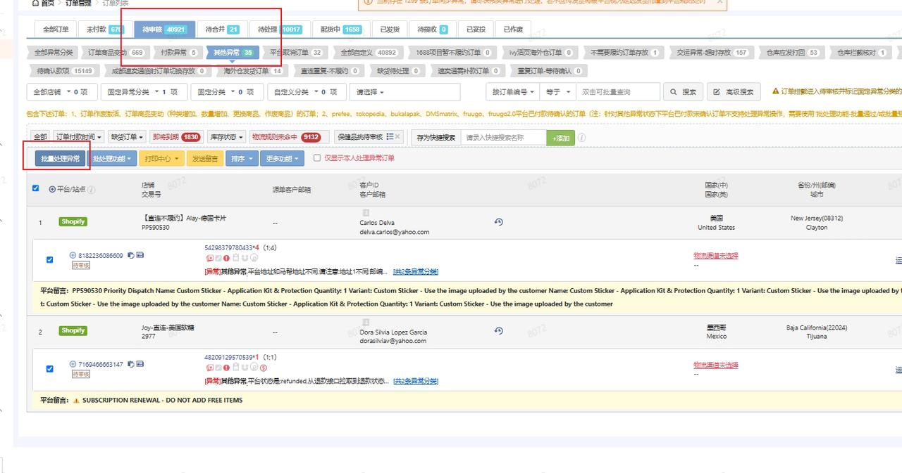
15. 客户付款/标记支付后 需要取消订单/缺货给客户退款:
选中订单 批处理功能-批量作废 !务必要备注好作废原因
去点石找该客户的待客户支付订单退款(可以找一单/多单,根据具体情况决定)

16. 库存更新
库存更新sop——只需要可用库存总量
库存更新sop——需要字段较多
以上两种方法一致,都是xoolup,只举例一种
1、去库存表复制需要更新库存的sku
Josie — 库存&赠品管理(正常客户)
VZN STOCK UP-updating(老钱眼镜)
https://docs.google.com/spreadsheets/d/1hLur6Mu2WhHoIzVs0Is7XZOena4CVtuKQDF66FzWUMo/edit?gid=1638802734#gid=1638802734(美英吊坠)
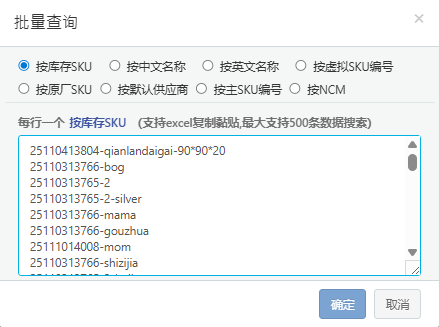

3、选择【josie组库存监控】模板导出
4、复制订单编号和相应字段,去库存表xlookup即可
17. 订单备注
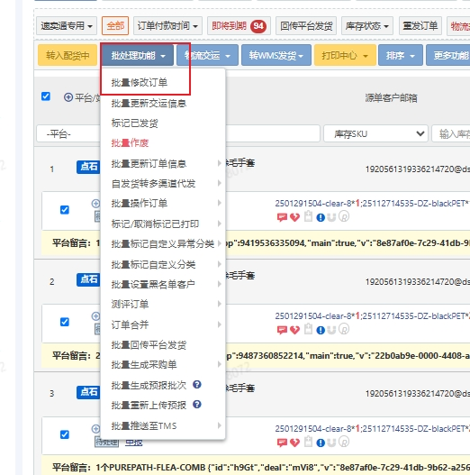
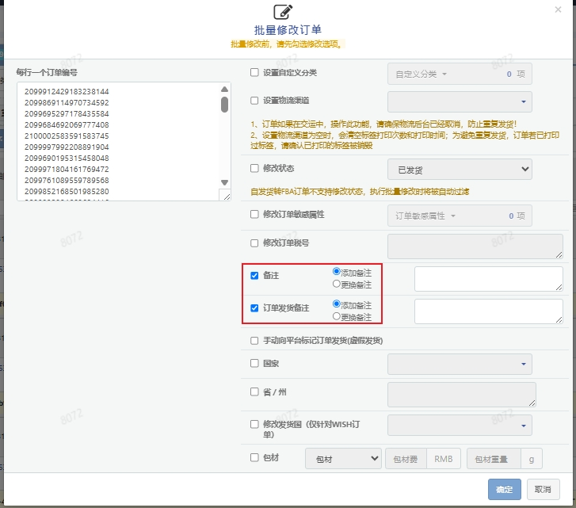
第四章 点石系统操作
1. 配对配价【标准】
注意:
点石未配价商品,但在DSers是awaiting payment状态,首次在点石配价要确认好价格再点保存,二次更新价格在DSers不会进行同步(解决方案:配价准确/配价完成后在DSers将订单进行回滚)
点石配对新国家——单pc/多pcs切换 注意之前报价
!一旦切换牵一发动全身,不仅是当下国家sheet,其他国家下都会被集体切换(如果出现每pcs的sku单价特意配的不同情况下,一旦被切换就会变没)

- 配价前要去小程序核价!!!利润小于10%不能配,要再次确认
2. 配对配价【特殊】——搓模板
前因:客户指定多pcs报价,标准物流模板无法实现(注:模板不一致会被系统判定为两个包裹,暴力相加;因此,措模板大概率和其他品组合出时是暴力相加的)
逻辑:报价=成本+物流费(物流费=sku重量*公斤费+挂号费),我们设定好挂号费,填好sku重量和成本,输入指定报价可通过公式逆推出公斤费
寻源报价(小)/模版这是我给霍格沃兹错模板的表,分美元模板和人民币模板(两个都可)
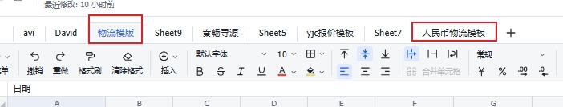
- 指定报价+1pc的单价和重量是需要手动填的,其他都是公式(霍格沃兹美元的模板要求留痕,所以直接复制一个在下面需要写好商品)
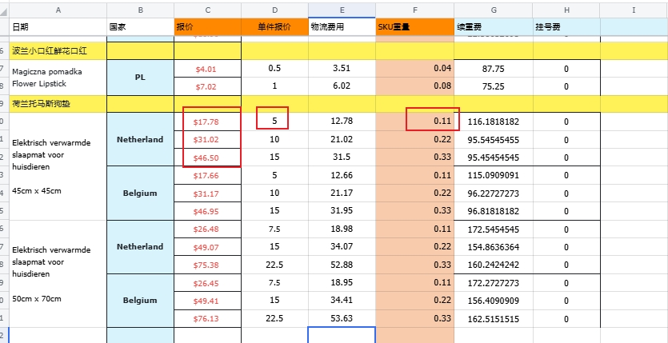
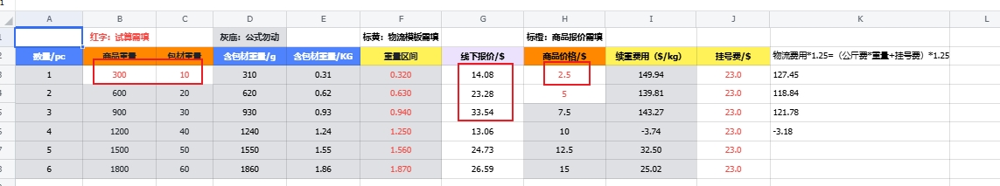
- 生成重量段、公斤费、挂号费后在点石创建物流模板
最终一定要好好检查生成的价格是不是我们想要的报价!
3. 上传物流模板/手动添加物流模板
- 在群聊(自营大协调)搜索最新的物流商报价,挂号费+2.5
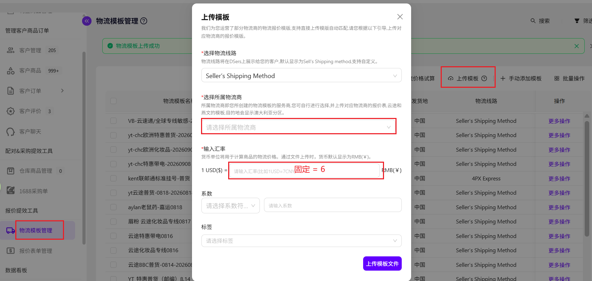
4. 点石配赠品
马帮操作
采集刊登赠品 OR 只采集赠品,通过插件同步到点石
维护赠品信息和主品一致 且 申报价值=1$
点石操作:
管理赠品——选择相应的品
先配赠品,再配价
5. 点石订单规则设置

6. 组合sku——“马帮同步点石”
用插件——点石商家服务插件

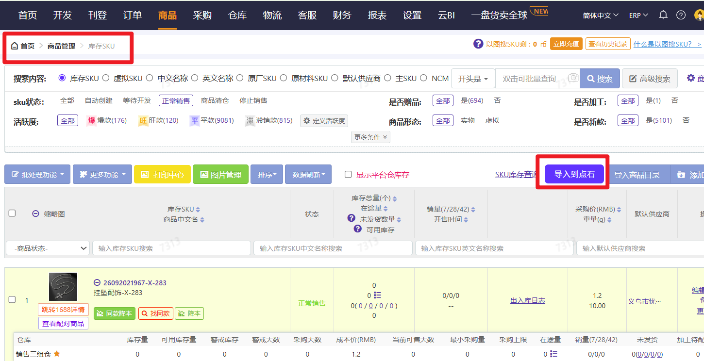
7. 订单改价
- 单个订单-记得保存
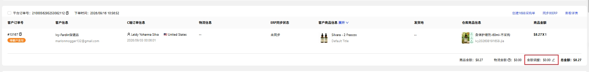
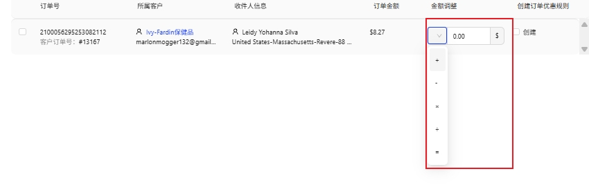
- 批量改价-记得保存
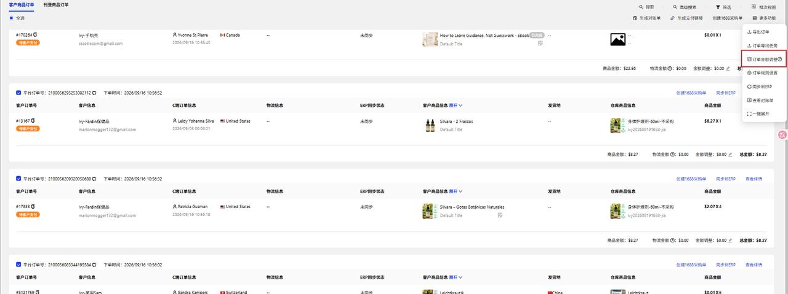
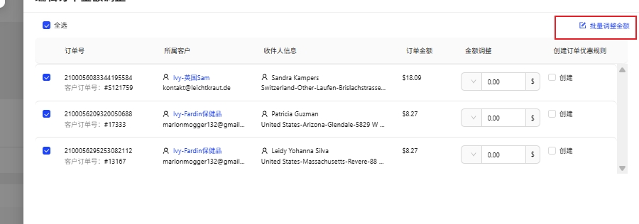
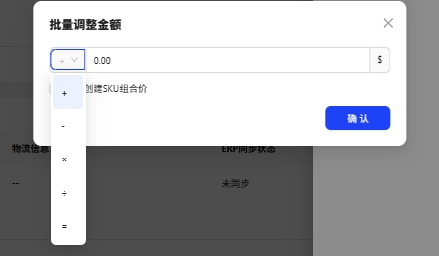
- 对账单改价——上传后填写名称,直接保存应用即可
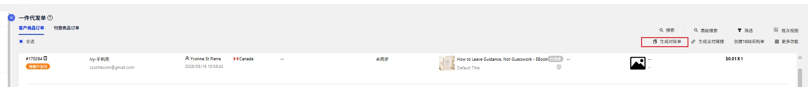
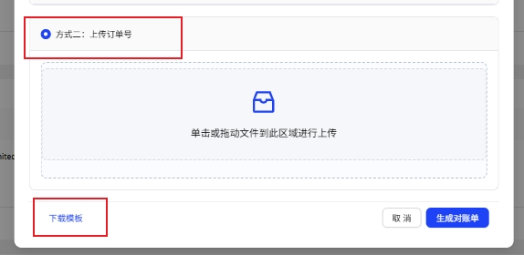
8. 点石配价新国家
检查店铺常用的物流模板
复制sheet+核价
9. 点石试算多ps
目的:为了防止BD指定多PC报价时,系统配不出来
使用场景:BD给aus1区报价$7.77,需要运营生成AUS1-4区的 1-6pc的报价
背景:销售报价时会指定1、2、3pc的价格。对于运营很难在点石系统上去匹配出来一模一样的,所以我们就有了一个试算。
试算就是指销售告诉:采购价、重量、物流渠道,运营通过试算去给他一个多PC报价(可能点石里还没有这个商品)
销售直接把这个多PC报价报给客户,假如客户同意了这个价格,建工单让运营配对配价的时候,可以根据相应的模板,得出的多PC报价一定是他给客户报的一样的
操作步骤:
进入点石 - 仓库商品管理 - 搜索试算 - 编辑
填写3个信息:实际重量、实际成本、包装袋重量——确认
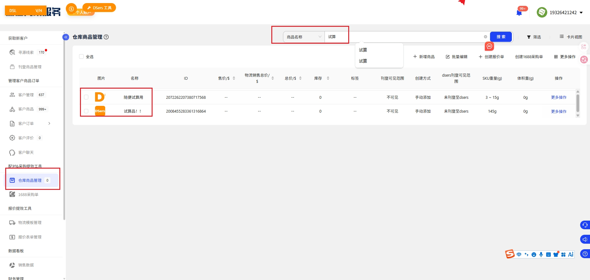
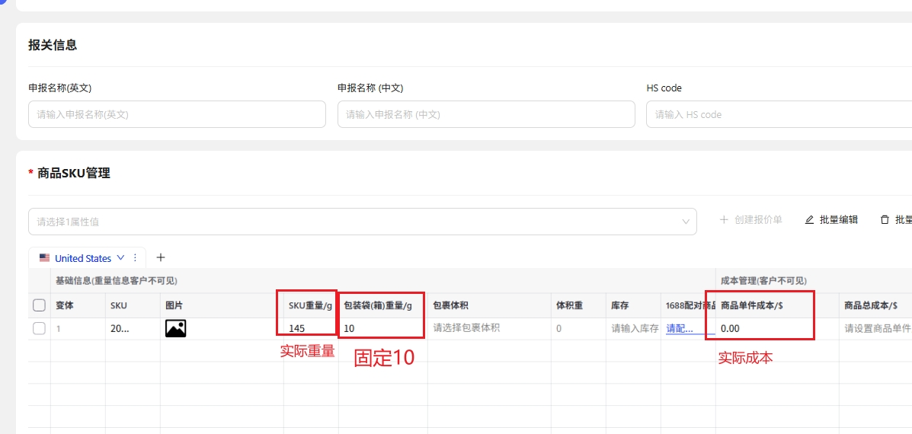
- 创建报价单 - 随意填写必填字段 - 确认
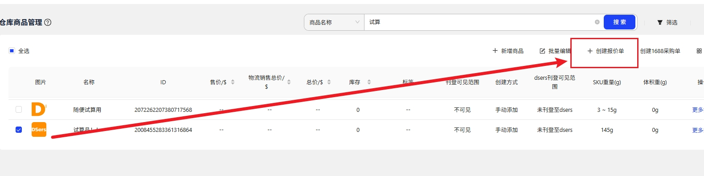
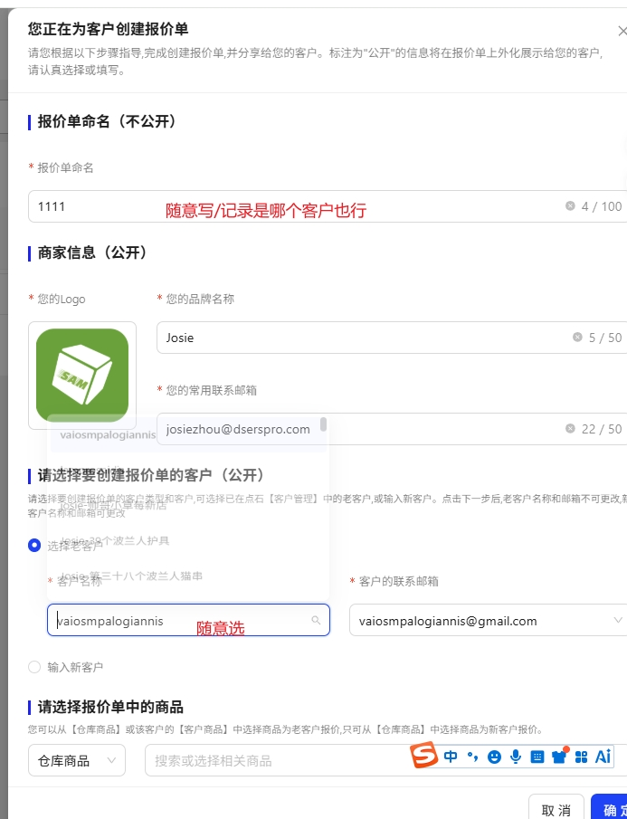
- 单一国家多pc报价:先设置好1pc的物流模板(确认店铺的常用模板和商品属性)、物流系数、总报价;点击多pc报价即可生成——对多pc进行核价,看毛利是否满足
- 多国家多pc报价:复制sheet——对多pc进行核价,看毛利是否满足
10. 点石换配对sku
第六章 新客户“一条龙”服务📌
为什么要重点关注新客户?
客户转化初期无信任基础
第一批履约展现供应链专业性
新客户新商品新商家不确定性强
操作流程——6步
- 点石更改新客户名称——建档审批、点石客户、马帮店铺三个名称要保持一致
点石客户管理-搜索新客户邮箱,命名为新客户建档审批同样客户名称(多为销售+客户名称)例如Josie-全球眼镜
- 绑定ERP账号——注意是马帮的私有云不是公有云(程金)
点石系统设置-ERP&订单平台授权-马帮店铺命名同样客户名称,例如Josie-全球眼镜
跳转登录马帮-选择私有云-店铺授权(必须等授权成功再退出页面)

- 关联客户与ERP店铺
点石客户管理-更多操作-编辑ERP设置-选择刚创建的店铺
- 马帮店铺税号设置
马帮-店铺列表-店铺设置-跳转最后一页-批量选择店铺-税号应用给所有【欧盟+挪威】

- 新客户收款配置
1确认客户付款方式&币种
2确认&核对销售给客户的银行卡信息
3点石客户管理-更多操作-编辑收款配置-选择对应收款方式&账号

第一批订单客户银行转账付款标记处理后,需去马帮把该批次打标“暂不发货”,待确认到账后取消标记,正常发货
第一批订单标记处理进入马帮后,任意挑选一单打标“拍摄打包视频”,追踪仓库视频反馈确认无误正常发货
对新客户履约情况by天追踪采购到仓情况,提前告知仓库绿色通道处理
第七章 常见易错点
(1)中文SKU更改全流程
10.1 导出相关sku
通过公式定位异常sku
公式:(A2为sku列)=IF(REGEXMATCH(A2,"[e00-fff]"),"有中文","无中文")
10.2 询问仓库
- 是否影响入库、商品包装是否贴签;有影响进行以下步骤
10.3 复制原sku建新sku
注:复制新sku会导致部分信息缺失、需导表<新建sku必填项> 在库存sku页面 判断具体的缺少信息
eg:销售负责人;统一成本价、最新采购价;供应商名称、供应商链接;商品包材、订单包材;采购员;仓库警戒库存、库存警戒天数等
库存sku上传模板
库存sku上传模板-必填字段版.xlsx
10.4 同步仓库新旧sku
- 凌晨静态时刻重新贴签
10.5 批量更换库存
- 贴签完需及时更换
10.6 换配对(点石)
在第二天上班前必须操作完毕
新sku批量上传至点石
定位相关sku的所有点石商品、换配对乱序、需细致
每个商品只需修改第一个国家、其他国家会自动修改
10.7 同步运营与采购
该批次订单标记支付后需同步运营、运营查看是否还有包含中文sku的订单、进行批量修改
运营修改完所有订单通知采购正常下单
10.8 二次筛查订单
- 该批次所有订单、是否有待处理订单中有不缺货未转配货的、同步物流组进行加急转配货
第八章 新人每日工作清单
上午
□ 查看待审核订单
□ 查看未配对订单
□ 查看采购情况
□ 查看入库异常
下午
□ 检查物流规则
□ 检查新品情况
□ 检查退款订单
□ 检查退货进度
下班前
□ 检查待处理订单
□ 检查缺货订单
□ 检查点石价格同步
□ 检查异常是否关闭
新人工作口诀
先检查,再操作;
先确认,再保存;
先备注,再处理;
有异常,必跟进;
有问题,先反馈。
做到:
不漏单、不漏货、不漏款、不漏异常。